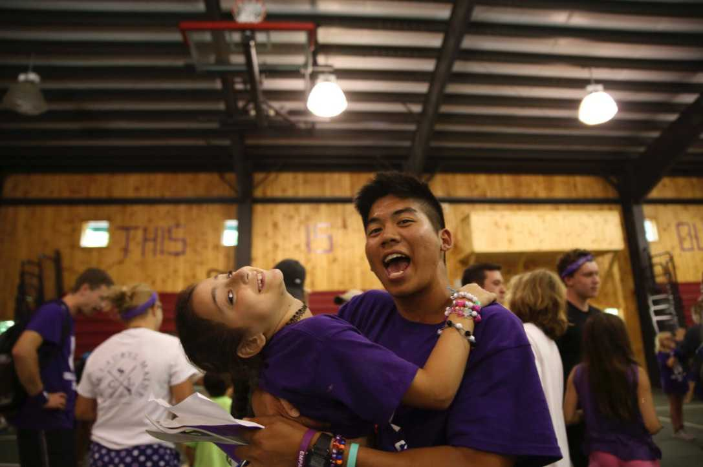
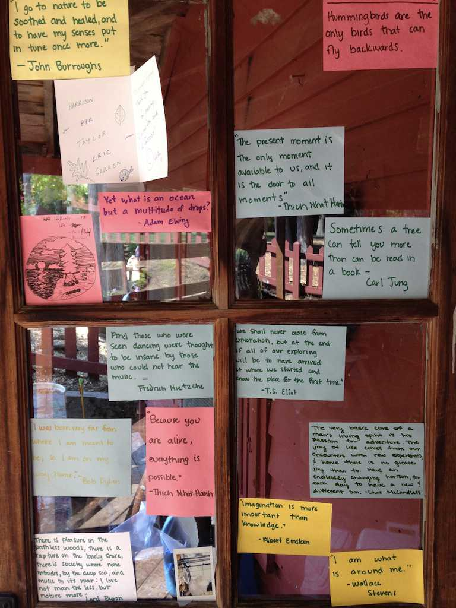
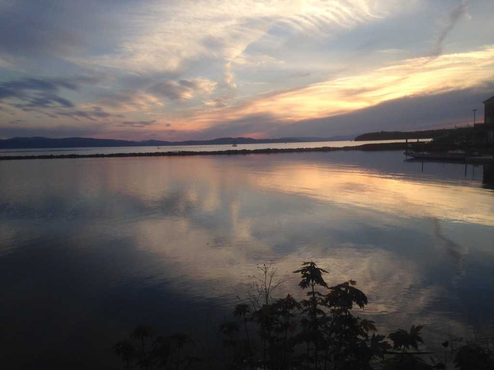
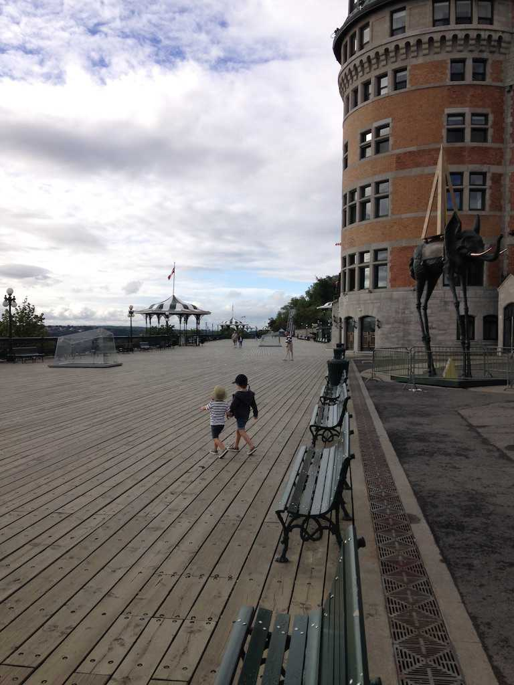
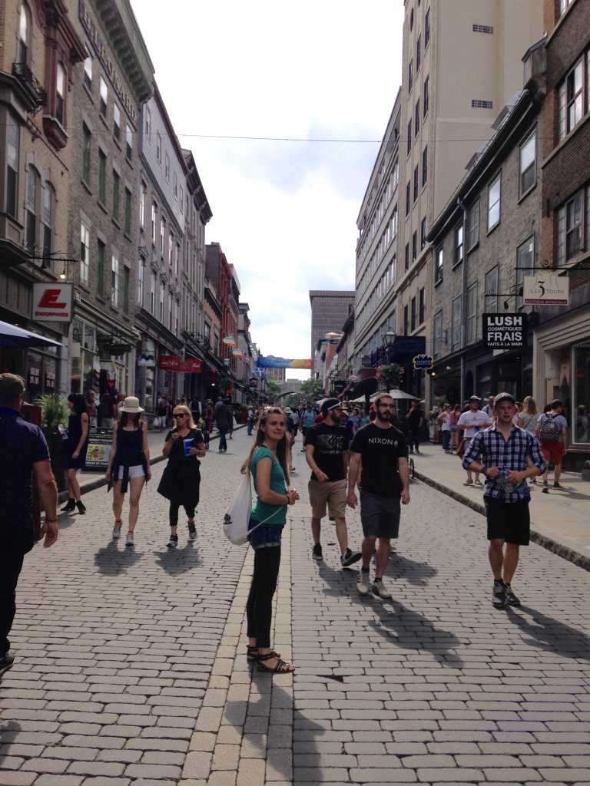
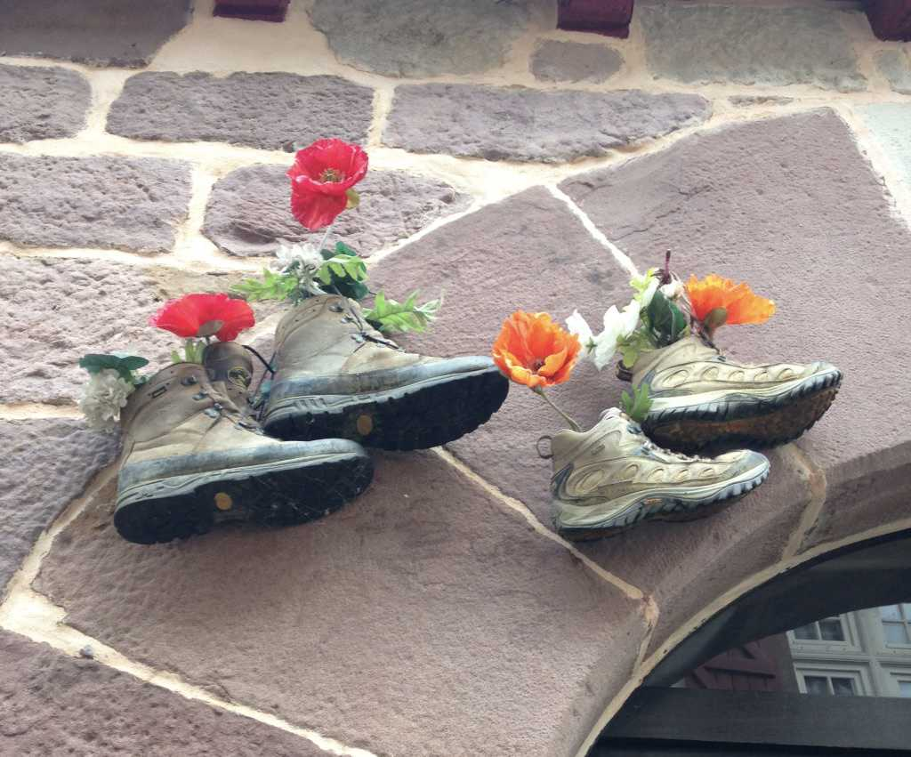

0: Introduction: Walking El Camino de Santiago
In May of 2017, while working in a Title I Elementary school in New Hampshire, I read a little fable called “Rebirth” by Kaval Ravikant.
The main character, Amit, is unable to return home after the death of his estranged father. He wanders, lost and filled with pain and grief, and is led to the Camino de Santiago. There he meets many travelers and pilgrims. Some are lost and searching for answers, others are running from their past, all have a story to share. Along the month-long journey, he is faced with the big questions of life, causing him to grow in a new direction and way of being.
Upon finishing the story, the seeds of the Camino were planted in my mind. “I will walk the Camino one day,” I thought. And perhaps by fate, just when I needed them to bloom, the seeds came to fruition 3 months later at a summer camp in Maine.
Summer Camp, Maine
I had just finished my year of service with City Year, New Hampshire. The plan afterwards was to attend Boston University for a graduate program in Educational Leadership and Policy Studies, but it didn’t feel like a good fit for me, so I withdrew my application and, with little time for decisions and no alternatives in sight, took a job as a camp counselor in Maine.
During the second week of camp I applied for a job in Colorado, confident of my ability to secure the position. I was rejected days later. It then become clear to me that I had no sense of direction in my life. I had nearly accepted an offer to go to graduate school because it seemed like the right thing to do, and I had applied to a random job in Colorado because I yearned for a sense of security.
What was I willing to work for? What did I really want to do with my life? How did I want to live? These questions haunted me, beckoning for some form of resolution, yet I had no answers.
I turned to books for guidance - my usual coping strategy - and reread The Alchemist and When Breath Becomes Air. The Alchemist inspired a dreamy sense of possibility while Breath instilled a demanding urgency. But neither resolved the growing existential angst in me.
Two weeks later, like a godsend, the idea of walking the Camino came to mind. The sensible me thought the idea was impulsive and irresponsible: what if it’s a waste of time? Was I only avoiding my problems? Was I choosing to run away? In the end my gut ignored these worries and made the decision for me: I went to the farmhouse - the only place with internet access at camp - and bought a one-way ticket to Europe.
A funny thing began to happen once my mind had settled on the decision: life got better. Once I had finally committed to something, my capacity to fully experience the moment grew as I settled into the present. Camp became a pure source of joy as I reveled in the interplay of Maine’s idyllic landscapes, the slow passage of time, and the high-pitched screams of happy campers.
On one of our last nights off, some of the Hungarian staff and I decided to camp in Acadia National Park. We pitched our tents beneath a sky full of stars and pine trees, lit a fire, and feasted on cheap chips, beer, and wine. The smell of bacon and campfire filled the air. I turned toward my foreign friends, then to the grand night sky. It felt as if the universe was watching over me, and I entrusted my future to it. I believed that everything would work itself out and let go of the incessant desire to control everything. In the warm arms of the sublime, I felt light, free, happy, and loved. I felt infinite, like Charlie the wallflower.

The Woods of Maine
On the last day of camp, I paddled out to the middle of Echo Lake and sat amid the glossy water, wondering what to make of the whole experience, contemplating how the future would unfold.
It was my birthday, August 10th. “Not much has changed but me,” I thought. “I am the same person as I was yesterday, only now I have the number 24 plastered to my identity.” I was no longer 23, 15, or 10. Yet in some sense, I was: I was still the flippant adolescent of 14, the bashful child of 7, the confused adult of 18 to 23. How was I to define 24?
I wrote a promise to myself:
This life you have before you is the only certainty. Don’t take it for granted. Own it and live it with meaning, beauty, courage, grace, and presence. Dare to dream. Spend it with people you love, spend it loving people. Be heartbroken, be brave, make mistakes. Do all of the things that scare the shit out of you.

Once camp was over, I drove down to New Hampshire to see an old friend. We hiked Mount Washington - I went barefoot - and exchanged stories in the backdrop of the White Mountains.
Afterwards, I camped in the woods of Maine for five days while waiting for my friend Eszter to finish her remaining days at camp. There my demons emerged with staggering clarity. Insecurity, self-doubt, fear, loneliness – they had settled themselves in the forefront of my being. Only when I accepted them as parts of me was I able to enjoy nature’s invitation to solitude and serenity.
Sitting on the crest of Seboeis Lake one night, I watched the clear water shimmer, and a growing sense of calm began to overtake me. My problems grew small, insignificant, and petty, fading altogether as the water reposed and sun descended. Silence took its hold and my perception of time disappeared. It was incredibly peaceful, and I started to cry and laugh out of sheer euphoria. My audience, an ensemble of crickets, cicadas and other creatures, echoed in unison under the starry sky. I had been invited to witness a crescendo of grand proportions, and nature was the composer. My loneliness, for a moment, was alleviated, and the words of Oliver Sacks rang through my mind: I, then and there, in the middle of an intimate intercourse with the natural world.
Moments like these were rare. I recognized they were more likely to visit in conditions that allowed for total stillness. Should a person survive what initially feels like a trial by fire, this staggering state of loneliness, they emerge more alive and deeply in-tune with the world around them. Their capacity for love, understanding, and presence deepens. They become infinitely more capable. They are grateful to have been called back as cast members in the grand play of the cosmos.

Canada
I met Eszter in a canoe. Initially she seemed hesitant to tag along because she either didn’t know how to swim, or she couldn’t swim very well. Regardless, in an attempt to ease her concerned looks–and probably to impress her–I assured her that I had done this before, that she could trust me to take her safely across the vast Echo Lake. In truth, it was my first time ever commanding a canoe. Luckily for the both of us, it turned out to be a relatively easy task.
The summer air was pristine, the lake gleamed in the sunlight, loon calls echoed in the distance. It was a perfect afternoon. I took notice of Eszter’s dark eyes, her rough European accent, her curious necklace with a dragon hanging from it. She came from Hungary and worked in the Chef Camp program. We talked about nature and our place as humans in it, what life at camp was like, our lives outside of camp, U.S. consumerism, among other things.
We didn’t see each other again until weeks later. Camp kept us busy, I out on the lake and she in the corners of Chef Camp. A few days after I had decided to walk the Camino, she posted on the camp Facebook page that she was looking for people to go to Canada with.
At that point I had developed a little crush on her, which, to me, seemed terribly irrational. She lived in Hungary, English wasn’t her native language, and I had no clue as to what I would be doing for the rest of the year. Regardless, the feelings were there, and I wanted to be in her company. What did I have to lose? At the very least, the trip would be fun.
Later, we met and talked about the trip. We considered flying to Quebec and Montreal, but that meant I would’ve needed to find a place to store my car —- more unnecessary expenditures. So I offered to drive instead. She looked at me with excited, bewildered eyes and said, in her rough Hungarian accent, “We’re going to fucking Canada!”

In two days we drove from Maine to Quebec, from Quebec to Montreal, and from Montreal to Niagara Falls, with some detours to Ottawa and Cobourg in-between. Our friendship grew through the confluence of stupid jokes and cringy puns, camper stories, and Hungarian metal. She taught me Hungarian curse words and I taught her American colloquialisms. Stuff like “brooo, suhp duuude, liike, y’know.”
What brought us close was our willingness to be vulnerable: we were open, honest, and non-judgmental in sharing our pasts, in telling each other our worst fears and deepest worries. We exchanged stories that possessed the capacity to destroy a person, secrets and thoughts that most people hide and bury in their psyches for eternity. Yet there we were, two people who were once complete strangers, attempting to piece together the incomplete shards of our disparate pasts, constructing the foundation of an enduring friendship.
In moments like these, I wanted to pull her close, wrap her in my arms, and tell her that everything would be fine–that everything was fine, at least for the moment. That even if I did not fully understand her situation, I would always be there for her. That we, with our powers combined, could get through anything. That she was with me, the overly optimistic, boundlessly romantic, Phil.
We parted ways at Toronto Pearson International Airport. She was heading to Mexico, and I to Ohio. It was a bittersweet goodbye–bitter because I have never been good at letting people go despite all of the practice I’ve had, sweet because I’d been lucky enough to have shared the journey with her.
She told me, as we let one another out of our embrace, “Phil, it not a goodbye. It’s a see you later.”

Departure to the Camino: September 05, 2017
I woke up in Boston on the cold, wooden floor of my friend’s apartment. It was his first day of graduate school, and my last in the U.S. for awhile.
My only possessions were my 30 liter backpack, three sets of outfits, two books, a sleeping bag, my down jacket, a phone charger, toiletries, my boots, and a 12-pack of granola bars. My pack weighed no more than 10 lbs. The only thing left to prepare was my mind. I was jittery and nervous, but also incredibly excited.
I spent most of the morning in a coffee shop writing a letter to my friends:
My life on the move is far from over: tonight, I will fly to Europe to begin my journey on the Camino de Santiago, a 500 mile trek across Northern Spain. It will take me 33-35 days to complete. And while I intend to do it alone, it will not be a solitary experience; I expect to meet and travel with people of all ages and walks of life on the road to Santiago. The Camino is one of my lifelong goals, and the opportunity to do it could be no more prime than now.
My motivations are simple: I want to see the world. I want to grow. I want to do something that scares the shit out of me.
In the pursuit of dreams, dreamers are met with several challenges. In my case, it was always figuring out what my next step was, dealing with the incessant self-doubt and fear that accompanies the process, and letting go of the attachments I developed with people, comfort, and calcified ideas that no longer served me. Such is the nature of walking the less trodden path. It’s unpaved, rocky, and dissuasive. If you don’t watch your step, you might just slip.
Yet, to quote Robert Frost, “[taking] the [road] less traveled by, / that has made all the difference”, the difference being a profound learning experience, a life lived on your own terms, a dream turned concrete reality.
That, in a nutshell, is where I am going. You’ll know when I have made it across. Thanks for the love and support.
With Sincerity and Gratitude,
Your friendly neighbor, Phil
After posting the update to Facebook, I thought of my parents and the argument we had a few days prior about my decision to walk the Camino. They believed I was being reckless, that I should’ve taken the opportunity at Boston University. They believed that I, at the age of 24, should’ve had my life figured out. I felt like a disappointment, a terrible son. But this was the path I had decided to walk, and I needed them to know that I wasn’t backing out.
I wrote a journal entry expressing my frustrations:
About the world, about my place,
About where I belong
In this infinite space,
I sit at the margin, misunderstood.
We collide and tear each other apart
What ever happened to our graceful start?
I a child,
You unconditional.
I don’t want understanding – I want love.
Forgive me and my trespasses
As I learn how to forgive myself
And relearn to love you.
Then I wrote them a letter expressing how I felt. I sent it minutes before boarding the plane to Europe:
Dear Mom and Dad,
For the past twenty or so years, you have given me the best gift a child can ask for: your unconditional love. Despite our conflicts, despite our differences, despite the ever-growing physical distance between us, you have loved and supported me unflinchingly. Thank you for that.
The worlds you and I grew up in could be no more different. I was born and raised in the safe and sunny suburbs of California; you in the dangerous aftermath of the Vietnam war. My childhood consisted of friendships, books, and video games; yours of rice fields, conflict, and uncertainty. Where I see possibility, you see risk. I struggle to know what’s next, who I will become; you struggled to survive.
I understand why you might feel the way you do about the path I currently walk – certainly scared, frustrated, saddened, uncomfortable, and maybe even disappointed. But know that you have raised a son who is strong, kind, independent, adventurous, curious, passionate, and happy. You have raised someone who isn’t afraid to chase after what he wants, after what he dreams of. Most importantly, you have taught me the meaning of compassion and kindness; that it isn’t always what we say that’s important, but what we do instead.
If you ever meet the people I’ve had the fortune of developing relationships with, I think they would say I am an easygoing, thoughtful, caring, friendly, loyal, and loving person; that I would give them the shirt off of my back and the food on my table to make them feel loved and welcomed. I only have you two to thank for this. You have taught me to be a person of good character; you have given me the basic necessities for leading a fulfilled and meaningful life.
Now, as I step out into the world and begin to draw my own map of it, I need your love more than ever. Because I will stumble and fall; I will get hurt and be heartbroken; I will be sad and frustrated and challenged beyond anything I have yet to face in my one and short life. But what’s life worth anyways if I don’t risk getting scratched and bruised along the way? That’s just a part of growing up; that’s how I have grown up; that’s how I want to grow up.
If you’re scared I won’t continue my “education”, don’t worry: my education has never been limited to the confines of a classroom. Life itself is the greatest teacher, and I am taught something new everyday.
If you worry I am a loose-cannon with no bearings or a home: Home has never been about a location or house. Home is where you feel at home, and for me, that is when I am growing. I am currently expanding the home of my heart.
Whatever it is that drives me forward will continue to do so. That’s not to say this force is inflexible or incapable of change, but rather that I will not deviate from who I am and becoming. All I ask is for your continued love and acceptance of me. All of me. Not of who you wish me to be, but of who I already am.
I ask of myself to do the same. To accept and love you as you are and who you will become throughout time and eternity. I am endlessly grateful.
Love,
Your Son
Sending it was one of the hardest things I have ever done. I was petrified – what would they say? Would they even understand? We weren’t a family that expressed our feelings so openly like this. It was always about the basics – food, water, money, school, family.
But before boarding, my Mom left me with this message:
“Philip, remember you will always be our son. I know you’re independent and want to do what you want, but always remember that. Me and your Dad will always support you, but know that I don’t feel happy about what you’re doing. I don’t feel good. I’m scared. Please stay safe. Keep us updated and send pictures. Your Dad and I love you.”
Heartbroken? Swelling with love? Check and check.
Are we ever truly ready for the future? I don’t think so. Life is too uncertain to always be prepared for it. But that shouldn’t deter us from living fully. Whether or not we have fun in the process is a choice. Me? I chose to dance.
I boarded the plane, unsure of what was to come. In the air, I took one last look at the Boston skyline, the clouds pressed against the horizon. A brilliant swath of pinkish-orange hues left the sky ablaze.
Behind me stood home. Ahead, answers, perhaps, amid a foreign landscape.
